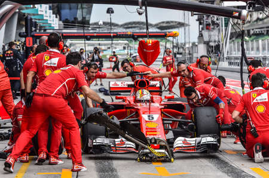

The History of Formula 1
The modern era of Formula One began in 1950, but the roots of Grand Prix racing are far earlier, tracing to the pioneering road races in France in the 1890s, through the Edwardian years, the bleak twenties, the German domination of the 1930s and the early post-war years of Italian supremacy.
At the birth of motor racing, cars were upright and heavy, roads were tarred sand or wood, reliability was problematic, drivers were accompanied by mechanics, and races — usually on public roads from town to town — were impossibly long by modern standards. Regarded as the first motor race proper Early F1was a 1,200 km road race from Paris to Bordeaux and back in 1895, won by Émile Levassor with his Panhard et Levassor in 48 hours. One of the most successful drivers of the early year was Fernand Charron, who won the Paris-Bordeaux race in 1899, also in a Panhard, at the blazing average speed of 29.9 mph.
The first race using the appellation “Grand Prix” was 1901’s French Grand Prix at Le Mans, won by Ferencz Szisz with a Renault, who covered the 700 miles at 63.0 mph. The 1906 Grand Prix de l’Automobile Club de France, commonly known as the 1906 French Grand Prix, was organized at the prompting of the French automobile industry as an alternative to the Gordon Bennett races, which limited each competing country’s number of entries regardless of the size of its industry. In 1908 the Targa Florio in Sicily saw the appearance of “pits,” shallow emplacements dug by the side of the track where mechanics Fiat 1920could labor with the detachable rims on early GP car tires — themselves a major technical improvement over the earlier technique of permanently attached wheels and spokes. But even so, racing cars of the early years were too heavy and fast for their tires; Christian Lauteschalnger’s winning Mercedes shredded 10 tires in the 1908 French Grand Prix at Dieppe.
In 1914, the massive 4 1/2 liter Mercedes of Daimler-Benz dominated the French Grand Prix at Lyons — 20 laps of a 23.3 mile circuit — taking the first three places and introducing control of drivers by signal from the pits. During World War I, racing was halted in Europe, and many drivers participated in the U.S. Indianapolis 500. Enzo Ferrari — who’s real fame was to follow as a team manager and manufacturer with Scuderia Ferrari, formed in 1929 to race Alfa Roméo P2s — finished second in the 1920 Voiturette race at Le Mans, the first international road race in France in six years.

The first (and, until Dan Gurney’s Eagle-Weslake at Spa-Francorchamps in 1967, the only) Grand Prix victory by an American-built car was by Jimmy Murphy in the 1921 French Grand Prix at Le Mans, driving a Duesnberg. Among the best of the 1920s manufacturers were Bugatti, whose straight-eight Type 35Bs won the French and Spanish GPs in 1929 and the Monaco, French and Belgian GPs in 1930, and Fiat, which introduced the supercharger for the first time in 1923. The year 1931 saw the formation of the International Grand Prix, later known also as European Automobile Championship, since all of the Grandes Épreuves took place in Europe. It was the first international drivers’ championship in motor racing history. The original regulations stipulated 10-hour races in France, Belgium, Italy and Spain, with two drivers for each car due to the duration of the races. All cars without restriction on weight or engine capacity — hence known as “Formula Libre” — could participate. The winners would be the driver pairing who in the 10-hour period covered the longest distance.
The Great Depression of the early 1930s led to an unfortunate lack of money for and general interest in Grand Prix racing, but saw the emergence of the legendary Tazio Nuvolari, whose wins in the Alfa Romeo P3 “Monza” in the Mille Miglia, at Monaco and the Italian GP at Monza were stunning. His fabled victories, well into Nuvloari’s ’40s, in the 1933 Monaco GP, the first in which staring grid positions were determined by qualifying performance — and which saw nine Monza Alfas 8Cs, seven Bugattis Type 51s and three Maseratis 8CMs entered — and in the 1938 Donington Grand Prix were epic. (No one of the spectators at the latter, who went home having seen a tremendous race, could have imagined that it would take 55 years before the next Donington GP was run. As winner Nuvolari got a worthy successor: Ayrton Senna!) Known to Italian fans as the “Flying Mantuan” or the “Great Little Man,” Nuvolari was just 5′ 3″ (160 cm) tall and he soon found out that he did not have the muscular strength to force the cars around the corners with the steering wheel. So instead he developed a technique where he put his car into a four-wheel drift and then controlled the slide with the throttle. In all Nuvolari spent 30 years in motor racing and as was his wish, was buried in his uniform when he died, after a long illness, a short few years after the modern F1 series was initiated.
But in 1934, the balance of power in racing would begin to shift from Italy to Germany, Germany 38with the emergence of factory teams from Auto Union (now Audi) and Mercedes-Benz, behind massive financial support from the Third Reich government on orders from Adolph Hitler. These powerful and beautiful German machines introduced aerodynamics into Grand Prix car design and ran on exotic, secret fuel brews. Driving the sleek, silver 3-litre V12 Auto Union in his trademark canary yellow jersey, Nuvolari achieved new greatness with these incredibly well-engineered automobiles — but nothing to top his 1935 German GP victory on the original, 14.173 milie Nordschleife (“Northern Loop”) at the Nürburgring, where he defeated nine modern German cars in a four-year old Alfa Roméo. For the race, Mercedes Benz had entered no fewer than five cars, driven by Caracciola, von Brauchitsch, Fagioli, Geier and Lang. The V-16 4.9 liter 350 bhp Auto Unions were piloted by Stuck, Rosemeyer, Pietsch and Varzi. Both German cars could, and did, exceed 175 mph. Nuvolari passed Rosemeyer on lap six, passed von Brauchitsch on lap seven, was re-passed by the latter on lap eight, caught von Brauchitsch again, Donington 38and Fagioli as well, on lap nine and passed Caracciola to lead the race on lap 10. The 250,000 German spectators could scarcely believe their eyes.
Nuvolari then had to sit through a “typical” Italian stop of over two minutes before he got back onto the track. Angry at the delay, his blood was up and he drove like a total maniac. Over the next few laps he passed Caracciola, Stuck and Fagioli as if they were nothing more than club racers. A later than usual pit-stop by Rosemeyer moved the little Italian back into second place once more. At the Karussell Kurve — a banked, tight left-hand hairpin paved on the inside line with concrete, now renamed Carraciola-Karussell — on the final lap, little more than 200 yards separated the red car from the Mercedes of von Brauchitsch, Nuvolari trailing, when a puncture on the silver car propelled Tazio to an astonishing victory. Von Brauchitsch continued on the rim only to have to see the Alfa Romeo pass and go on to win in front of the astounded spectators. With half a kilometer to go a second tyre blew on the Mercedes and a crying von Brauchitsch had to see three more cars pass before he could get his car over the line. For a second there was silence, but then the Italian was met by tremendous cheers from the crowd. This was a once-and-for-all triumph for the human qualities of skill, courage and judgement against the hard mechanical facts of speed, power and acceleration. The Nazi officials were confounded by the lack of a recording of the Italian anthem to play over the loudspeakers — only Deutschland Uber Alles had been ready for the inevitable German triumph — but Nuvolari himself was able to right the situation with his own record of the Marcia Reale, which he carried as a good luck charm.
BlogbrewTM was founded in 1997, and we have accomplished so much over the years. To create a world where exclusive blogs are available at the click of a button has always been our goal.
Our Founder and CEO Ram Shekhar was inspired to start this company by Mātā Amritānandamayī Devī herself. At Blogbrew, we encourage our community to Reach Out, Reach High and Reach Beyond.
Mission
Our goal is to provide our visitors with the latest, most informative and exclusive blogs available on the internet without compromising on ethics.
Vision
To be the most reliable Blog service that is trusted around the globe.
Core Values
Honesty, Integrity and Passion
Contact Info
Gmail